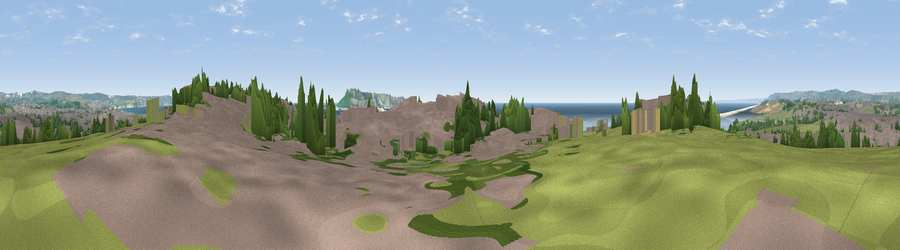

Viewpoint near Wyke Regis
#14087 in England · top 36% of its area beats it · near Wyke Regis · footpathWhere it is
The exact computed spot (SY 65825 77925). Click the marker for map links.
Public access: a public right of way passes within 17 m of this spot. Computed from Natural England's CRoW access layer and OpenStreetMap rights of way — not the legal definitive map. Always verify locally.
The view, rendered

A 360° render of this exact spot computed from the terrain model, tree cover and land cover — summer colours, afternoon light, calibrated against photographs of famous viewpoints. Real trees, hedges and buildings will differ in detail.
The panorama
Grey silhouette: terrain skyline in each direction (720 bearings, Earth curvature and refraction included). Dashed green: skyline with trees (+15 m) and buildings (+8 m) as obstacles. Blue strip: how far the ground is visible on each bearing.
Where the view opens
Wedge length = distance to the farthest visible ground on that bearing (vegetation-aware). Rings at 10, 25 and 50 km.
What fills the view
32% built-up · 26% grassland · 25% water · 13% woodland · 3% cropland · 1% bare ground
Angular shares of the visible panorama (visual magnitude), not map area. Landscape diversity 0.65 (0–1 Shannon).
Key numbers
More beautiful places nearby
The staircase of upgrades: each row has a higher view potential than everything closer. Driving times are estimates from straight-line distance, calibrated against real road routing — check an actual route before setting out.
| Place | Direction | Drive | Score |
|---|---|---|---|
| Viewpoint near Wyke Regis | E · 1 km | ~2 min | 63.9 |
| Viewpoint near Wyke Regis | W · 1 km | ~2 min | 64.9 |
| Viewpoint near Fleet | NW · 4 km | ~9 min | 71.0 |
| Viewpoint near Fleet | NW · 4 km | ~10 min | 71.6 |
| Viewpoint near Castletown | SE · 5 km | ~11 min | 81.2 |
| Viewpoint near Portesham | NNW · 11 km | ~21 min | 82.7 |
| Viewpoint near Chaldon Herring | ENE · 11 km | ~22 min | 82.9 |
| Viewpoint near Chaldon Herring | ENE · 12 km | ~22 min | 83.5 |
50.60004, -2.48424 · source: screening · position refined by local search. Computed location — check access rights before visiting.